遊びで植物を育てよう
2020/07/12
ブラックベリージャムを作りました。
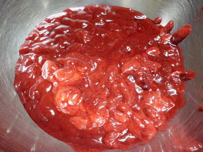
ミキサーにかけて、金ザルで種を取った状態です。
ドロっとしています。
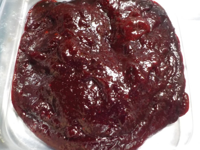
砂糖を入れて煮詰め、柚子の汁で固めました。
ちょっとハードなジャムが完成しました。
濃い味のゼリーです。
ヨーグルトに混ぜたりパンにぬって食べれないので失敗かな？
味自体は美味しいので、お菓子としてそのまま食べようと思います。
【ブラックベリーTOP】 【果物TOP】 【園芸TOP】
2020/06/28
来週からはブラックベリーのスイーツ作りです。
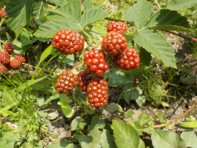
実が赤くなりました。
もうちょっとで黒くなって食べれますね。
冷凍庫にスペースがあまりないので、収穫したらドンドン加工して食べるつもりです。
【ブラックベリーTOP】 【果物TOP】 【園芸TOP】
2020/05/17
ブラックベリーにもカミキリがいた。

どこにでもカミキリムシがいます。
葉っぱを食べるくらいはまだいいですが、茎やテッポウムシの被害にあうのは嫌です。
捕殺しました。
【ブラックベリーTOP】 【果物TOP】 【園芸TOP】
2019/07/13
ブラックベリーのジャムを作りました。
種取りがとっても面倒なブラックベリージャムです。
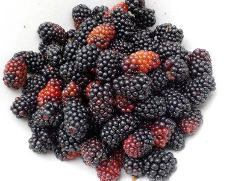
何か作業が楽になる方法がないか検討しました。
今まではジャムを作ってから金ザルを使って種を取っていたんですが、これだと粘性が強くなっているので労力が必要でした。
後、種と一緒に砂糖も捨てることになりもったいなかったです。
今回はジューサー（ミルサーっていうのかな、ミキサーっていうのかな？）で液体にしてから金ザルで種を取りました。
ジューサだと20秒くらいで液体になりました。すぐですね。
液状なので種の分離はジャムにしてからの時より簡単でした。いままでの半分の時間も使わないです。
始めからこっちの方法に出会っていればよかった。最初検索で見つけた作り方はクックパッドだったかな？それ見て作ってたんですが失敗でした。
実際に作ってみて、問題があったら再検索してよりよい方法を探さないといけませんね。
今回はジュース状態から砂糖をいれてジャムにしたので、煮詰めるのがとても簡単でした。
砂糖少な目で、少し酸っぱくて濃い感じの美味しいジャムができました。
【ブラックベリーTOP】 【果物TOP】 【園芸TOP】
2019/06/02
ブラックベリーが沢山食べれそうです。
実が沢山出来てます。
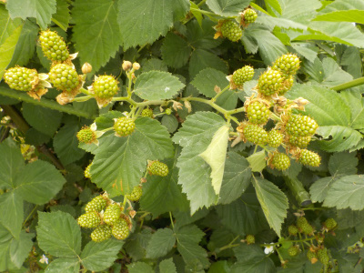
ブラックベリーって余程のことがないかぎり不作がない気がする。
【ブラックベリーTOP】 【果物TOP】 【園芸TOP】
2018/07/21
ブラックベリーに毛虫大量発生中。
イラガですね。
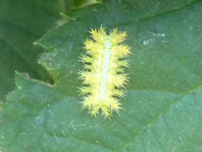
近寄りたくないですが、ブラックベリーの収穫をあきらめるのはもったいないので慎重に摘み取り作業をしました。
作業後、肌に異常がなかったのでよかったです。
【ブラックベリーTOP】 【果物TOP】 【園芸TOP】
2018/07/01
ブラックベリーの収穫スタートです。
色が黒くなって食べごろになりました。

ジャム作りスタートです。
ジャムを食べるために食パンを買おうかな。
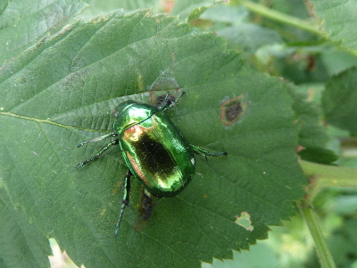
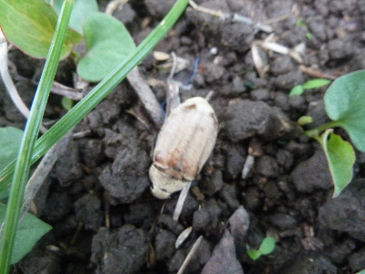
今日は毛虫がいなくて良かったです。
コガネムシとカナブンがいました。
【ブラックベリーTOP】 【果物TOP】 【園芸TOP】
2018/03/11
ブラックベリーの柵を作りました。
秋に台風かなにかで壊れてたので、誘引の棚（柵）を作り直しました。
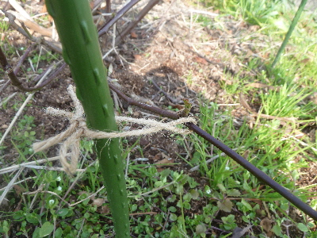
新しいものを作るのって達成感があっていいですね。
見た目も綺麗になりました。
今日はいいことしたなって気分です。
【ブラックベリーTOP】 【果物TOP】 【園芸TOP】
2017/07/02
ブラックベリーを収穫しました。
今年初の収獲です。
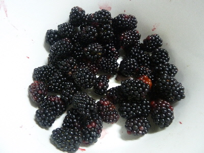
早速ジャムにしました。
食パンを買って、付けて食べようと思っています。
【ブラックベリーTOP】 【果物TOP】 【園芸TOP】
2017/05/14
日当たりのいい場所のブラックベリーの花が咲きました。
去年沢山剪定したので今年は花が少ないだろうと思っていたんですが、沢山咲きました。
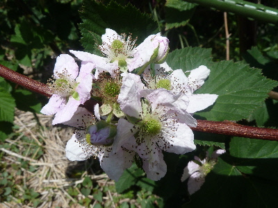
ブラックベリーは成長が良くていいなー。
【ブラックベリーTOP】
【果物TOP】
【園芸TOP】
過去の記事
2016/07/23
この頃毎週こんな感じです。
2016/07/03
ブラックベリーが採れ始めました。
2016/05/01
ブラックベリーに蕾が沢山付いています。
2016/01/31
ブラックベリーを誘引しました。
2015/07/11
ブラックベリーの収獲が始まりました。
【ブラックベリーTOP】 【果物TOP】 【園芸TOP】
2015/06/28
ブラックベリーを食べました。
2015/05/31
去年挿し木したブラックベリーに花が付きました。
2015/05/03
ブラックベリーの蕾が出来てます。
2015/03/15
ブラックベリーの芽が大きくなってきました。
2014/08/02
ブラックベリーために草抜きをしました。
【ブラックベリーTOP】 【果物TOP】 【園芸TOP】
2014/07/19
ブラックベリーの害虫。
2014/07/12
ブラックベリーを沢山収穫しました。
2014/07/06
ブラックベリーが黒くなってきました。
2014/06/15
挿し木のブラックベリーを地植えにしました。
2014/05/03
ブラックベリーの挿し木の結果
【ブラックベリーTOP】 【果物TOP】 【園芸TOP】
2014/04/06
ブラックベリーの挿し木から芽が出ました。
2014/02/16
ブラックベリーを挿してみました。
2013/08/10
ブラックベリーはそろそろ終わり。
2013/07/21
ブラックベリーを収穫しました。
2013/06/02
ブラックベリーの花が咲きました。
【ブラックベリーTOP】
【果物TOP】
【園芸TOP】
巨大化に注意しましょう。
【おいしいものを食べよう。】【たくさん寝よう。】
【ソロ活をしよう!】【季節感のあることをしよう。】【動画視聴はほどほどに。】【当サイトの全てのコンテンツは無断転載禁止です。】